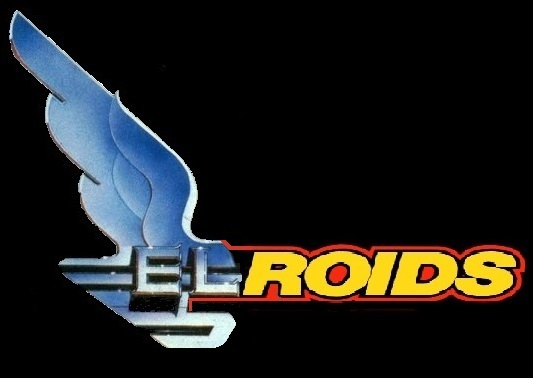

'Elroids' game Manual.
Controls
Based on 'BBC Elite' control set.
- '<'/'>' - Roll left/right
- 's'/'x' - Climb/dive
- 'z'/'c' - Yaw left/right
- 'space' - Thrust
- '?' - Brake ... (Relative to what???)
- 'm' - Fire 'Asteroids style' dumb missile. Hold down for auto-fire.
- 'p' - Pause/unpause game.
Camera angles.
- '1' - 'Pilot'. Pilot's eye view.
- '2' - 'Chase ship'. Following just behind and above ship.
- '3' - 'Tracking'. Follows ship but does not turn with it.
- '4' - 'Fixed'. Ship can fly out of shot.
Radar
In 'Pilot' mode a 'radar' is provided in the lower centre of the display.
The radar is a 2D representation an inclined plane 'horizontal' to the ship. The ship is shown by the central white blob. It's forward arc is towards the top of the screen
Once withing range other objects are diplayed as 'flags'.
- If an object is above the horizontal plane it has a 'stick' downwards to its projected location on the plane.
- If an object is below the horizontal plane it has a 'stick' upwards to its projected location on the plane.
- Flags have similar colour to the object they represent.
This takes a while to get used to but hopefully is familiar to 'Elite' players.
Radar 'perspective' implementation is not geometrically correct ... however because forward, most important, arc is not 'shrunk' it's more useful like this.
ToDo ... add a much better description with diagrams.
Rocks
Come in various sizes. When hit they split into two parts. If the parts get too small they turn into 'Minerals' (or vanish if contaning nothing of value).
Rocks have individual 'mineral composition'. The effects their apperance.
When a rock splits it's components are not divided equally. They 'concentrate' in the remaining parts. Enables the creation of pure 'Minerals' for mining.
Regardless of composition the radar displays all rocks as dark grey.
Minerals
Once a rock gets small enough it breaks into 'Minerals', dependant on it's composition, repesented by metalic cylinders.
Minerals can be picked up by ramming them.
For now a score/credits are awarded for picking up Minerals. Eventually they will go into the ship's cargo bay and have to be traded for other stuff.
Minerals have a limited lifetime. If not picked up (or destroyed) they self-destruct.
Lives
Each ship has 3 hit points. Once these are exhausted the ship is destroyed and re-spawns at the start location.
There are 3 lives in the course of a game.
Currrently no additional lives.
Saucers
There are several types of saucer. They have differing behaviour, colours and sizes. In 'safe' mode some are less agressive.
- 'Mothership' (light green):
- A single, large, 'Mothership' is created.
- Periodically it spawns other saucers.
- It will try to avoid you.
- The first Mothership, and all it's spawn, are created in 'safe mode'. This gived beginers a chance of learning to fly without too much opposition.
- If destroyed a random time latter a replacement is generated. This is in 'normal mode'.
- Score a large numer of points. So worth hunting.
- 'Static' (light green). Doesn't move.
- 'Wanderer' (light blue). Wanders about aimlessly.
- Aren't too dangerous and they block up the 'maximum number of saucers' 'slots'.
- 'Shooter' (pink):
- Moves to a loation near the ship.
- Fires missiles in random directions.
- Occsionally re-locates.
- 'Hunter' (dark green). Like a 'Shooter' but fires bursts of targeted missiles.
- 'Rammer' (red):
- Tries to collide with ship.
- Best countered by...
- Fly past it at high speed.
- Turn 180 degrees
- It will now be in your sights and trying to catch up.
- Slow down and when it gets close enough kill it.
- 'Pirate' (dark gray):
- Steals Minerals and runs away.
- Gradually consumes the Minerals it has stolen.
Todo: Make above list into a table including colours and scores.
Saucer pilots aren't great 'navigators'. Even in 'safe' mode they occasionally collide with things.
All types tend to 'wobble about' while 'seeking' their target location. Makes them difficult to hit. Probably held up with bits of string ... just like 'real' saucers.
Scenery
There are a few things you cant interact with. But they are useful for orirntation:
- The Sun. A sphere in the location that most of the light is coming from.
- Moons. Spheres for orientation. They display 'phase' accurate relatice to the sun. There are several colours:
- Gray. Standard.
- Pink. All hail 'the Lunar Empire'. (Runequest players will understand).
- Custard. Beware the custard moon!
- Blue. Not often seen.
- 'That's no moon' ... possibly in an expansion.
Points
Points are currently scord for:
- Shooting saucers.
- Picking up minerals.
Hints
- Getting killed early on? ... The initial mothership is created in 'safe' (low leathality) mode. If it is killed replacements are in 'standard' mode. Practice flying, and rock breaking, before killing the initial mothership.
- Missiles going in 'odd' directions? They are launched relative to the ships current speed. You may be drifting sideways. Use '?' to stop the ship before fireing.
- Sometimes rocks don't break. I think this is generally because they are big rocks that are out of range (the universe is a REALLY big place) get closer.
- How to get close to a rock:
- Observe direction of rock's movement.
- Aim cross hairs slightly ahead of rock's trajectory.
- Acceletate. This will move you closer to the rocks trajectory.
- When you get close use '?' to stop.
- Repeat above.
- Minerals can be shot. When firing at large rocks hold down the fire button. When shooting at small rocks fire single shots or you may destroy the products.
Ship control menu.
Is deliberatly 'primative'. (Even if it took a hell of a lot of coding).
Eventually it may be possible to buy an upgrade with in game currency.
Whatever is done menus should be controlable via the 'ship contol' interface. i.e Should still be usable if/when we move to tablet/phone or other non-keyboard interfaces.
Commerce.To be implemented.
Eventually it should be possible to harvest minerals from rocks (or destroyed ships) and trade them for ship upgrades/repairs etc.
Initially at any time. Eventually throught trading at 'stations' like 'Elite'.
Features
Things that are technically 'wrong' ... for a reason:
- Sometimes a missile hits a rock and then also the split pieces ... maybe it was just a very big bang! Leave for now.
- Avoiding rocks were supposed to be a major part of this game. However it turns out that, in a 3D universe, the chance of getting hit is pretty small. I am told this is the case in real asteroid fields.
Developer information
Is is separate docs.